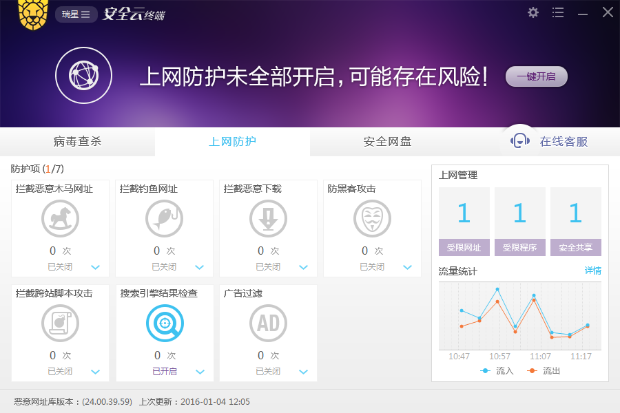
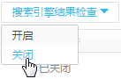
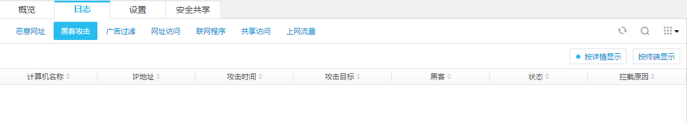
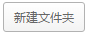
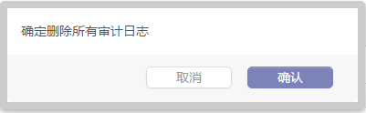
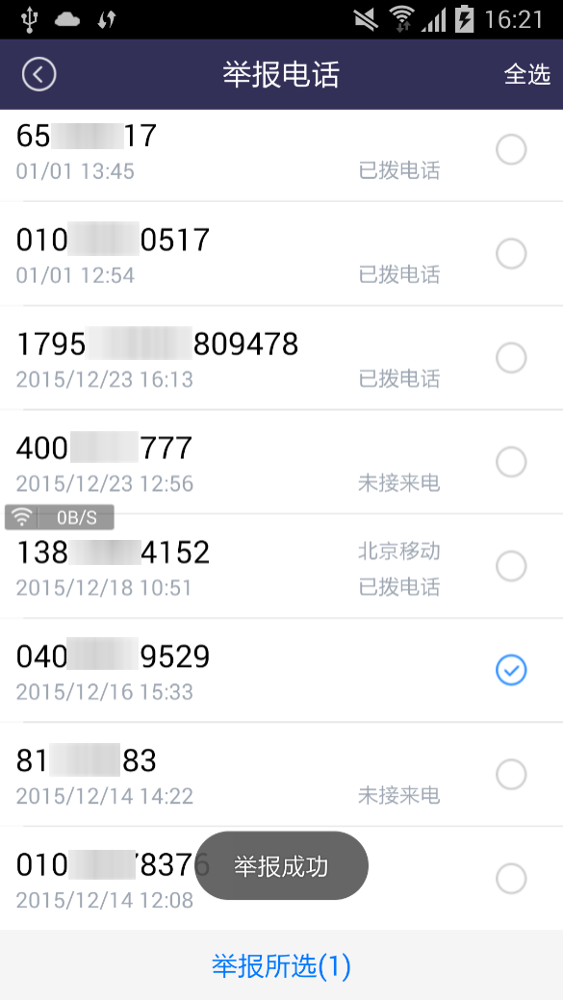
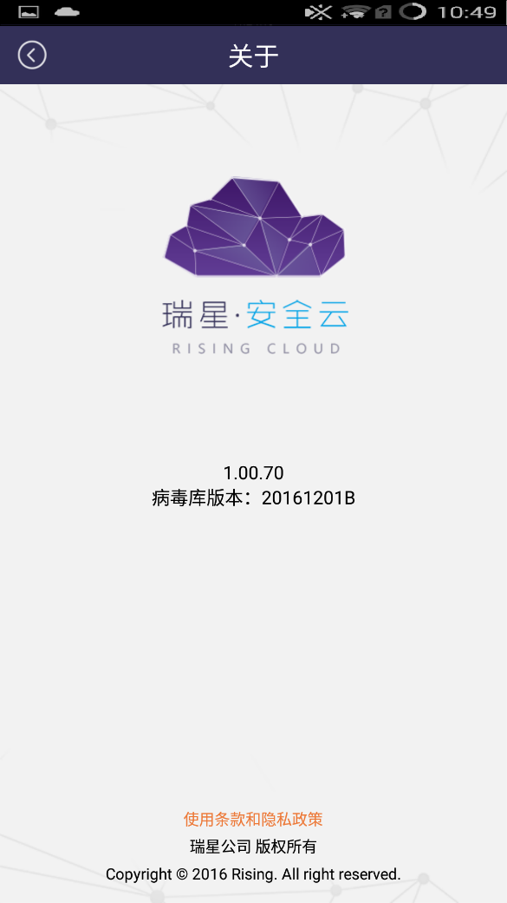

本节介绍瑞星安全云账号的注册和登录，并说明如何将瑞星安全云终端绑定到瑞星安全云，最后介绍瑞星安全云的常用操作。
在浏览器地址栏输入安全云中心地址：https://www.anquanyun.cc/register.html，进行用户注册。
选择用户类型，输入账号（邮箱或手机号）、密码、确认密码和验证码，勾选用户隐私条款，最后点击【立即注册】。如图所示为邮箱注册。
注册信息提示用户到邮箱查看激活链接。
如果是邮箱注册，邮箱将收到账号激活的链接，直接点击链接进行激活。
如果是手机号注册，手机将收到验证码，在验证框输入验证码进行激活。如图所示为邮箱验证。
如图所示为邮箱验证激活成功。
注：移动端也可以进行注册，方法步骤和PC端类似。
1、在手机上安装瑞星安全云终端（Android版）后，打开APP，在主界面点击【立即加入中心】，如图所示。
2、加入需要输入企业管理员提供的中心识别码，或者自行注册企业中心识别码，注册方式是点击【加入中心】，然后点击【还没有中心码？请点击注册】。如图所示。
3、跳转到注册页面，按照提示填写验证邮箱或者手机号，之后到邮箱或通过手机验证码激活。激活成功后，账号注册成功。
在浏览器输入：https://www.anquanyun.cc/login.html，输入账号和密码，点击【登录】。
登录后界面
瑞星安全云能够管控所连接的安全云终端，监控安全云中心的安全状况，针对威胁和预警进行远程操作和处理。
瑞星安全云与安全云终端的联动分两种方式。一种是通过瑞星安全云下载安装包，安装后，安全云终端会自动绑定到对应的安全云。默认采用这种方式，这里就不过多介绍了。
另外一种方式需要通过用户手动绑定。没有通过登录安全云获取安装包或者是安全云终端需要更换安全云时，要用到这种方式。在安装安全云终端后，需要自行绑定。绑定方法如下：
在瑞星安全云终端（Windows版）病毒查杀页面左下角，点击【加入中心】，如图所示。
输入中心的账号（手机或邮箱），点击【搜索】，将能看到中心名称。点击【立即加入中心】，加入中心成功。如图所示。
需要解绑安全云时，点击出现如图所示菜单，选择退出中心。如图所示。
加入中心，是指加入到瑞星安全云中心，加入后可以享受远程维护、风险警告、安全服务等企业级安全功能。
在加入中心界面输入中心识别码，点击【立即加入中心】。
绑定成功后，如图所示。
点击【加入中心】，界面显示绑定信息。绑定信息有中心名称、绑定时间、可以享受到的服务。享受到的服务包括远程维护、风险警告、安全服务。
远程维护：企业管理员通过瑞星安全云企业中心对手机客户端进行远程维护。 风险警告：当用户进行了有风险的操作时，瑞星安全云企业中心会向客户端发送安全风险警告。 风险警告：当用户进行了有风险的操作时，瑞星安全云企业中心会向客户端发送安全风险警告。 上述服务都是企业管理员通过瑞星安全云下发，不需要用户做任何操作。1、客户端可以自由的进行解除绑定，如需解除绑定，点击最下方的【解除中心】，会提示确认。
2、在提示框中点击【解除】，解除绑定完成。
在安全云设置项前的这个“锁”是策略锁，用于锁定安全云终端的策略设置。点击一下就变成蓝色，表示锁定该策略，在安全云终端不能对该策略进行修改，只能通过安全云修改策略；再次点击又变成灰色，安全云和安全云终端都可以对策略进行修改。安全云锁定策略如图所示。
在安全云终端的策略设置变成灰色，无法在安全云终端进行修改。效果如图所示。
注：有策略锁时，安全云中心策略的修改优先级高于安全云终端；无策略锁时，安全云终端策略的修改优先级高于安全云中心。即，安全云终端采用默认策略（未在安全云终端修改过策略）时，无论是否加锁，安全云中心的策略修改都将应用于安全云终端；在安全云终端进行了策略修改后（未采用默认策略了），则只有加锁才能将安全云中心修改的策略应用于安全云终端。
进入各操作界面后，可以在界面右上角看到一排图标，该图标可以进行搜索过滤和排序，文档中所出现的操作方法如下：
如果是手机号注册，手机将收到验证码，在验证框输入验证码进行激活。如图所示为邮箱验证。
，点击一次该图标，表示刷新一次列表； ，点击一次该图标，表示刷新一次列表； ，点击后弹出选择菜单，可以自定义需要显示的条目，不需要显示的条目可以去掉勾选； ，表示无序； ，表示按降序排列； ，表示按升序排列。如图所示例子为按照IP地址升序显示列表。
在瑞星安全云中，对于每个功能项，既可以按照组进行策略设置，也可以单独按终端进行策略设置。在组管理中，每项设置都是以组为单位进行设置的。例如，如图所示为组管理快捷开关：
可以点击，新增管理组，输入组名，点击【确定】即可。可以根据环境和实际需要都安全云终端进行合理分组，便于管理员统一管理。
每一项设置都可以应用于组，需要对某组的安全云终端进行设置和操作时，需要首先选定该组。
而对单台终端进行设置时，先点击【显示终端】，点击终端所在的分组，再选中该终端，然后进行设置。
，表示目前是隐藏终端的，在分组下不能看到具体的终端，默认是隐藏终端的。点击这个图标，切换到显示终端，如图所示。
，表示目前是显示终端的，可以在分组列表下查看具体的终端。点击一下，切换到隐藏终端，在分组下将不能查看具体的终端。如图所示。
，这个状态表示显示分组管理窗口，点击一次【隐藏】，变为,表示隐藏分组管理窗口；想恢复将鼠标移动至分组管理处，点击【固定】，分组列表将恢复显示。
安全云中心分为消息中心、终端部署情况、全网数据统计三部分。如图所示。
消息中心可以查看安全云中心的所有消息，包括绑定到安全云中心的客户端的信息，可以通过点击不同分类进行选择性查看，分类如图所示。
全部：查看所有的终端
系统类：按系统分类进行显示 安全类：按安全严重程度显示 日志类：按日志的排列顺序显示 厂商类：以厂商名称分类显示删除消息：将鼠标移动到某条消息上，消息右下角将显示图标，点击即可删除该条消息。
点击【查看更多】，进入消息中心的详细页面。如图所示。
终端部署情况主要展示的终端部署统计数据，如图所示。
区域上部展示的是PC端在线和离线数量及其百分比，移动端在线和离线数量及其百分比。加入中心的终端数量。
区域下部展示的是终端软件下载通道，目前提供的是Windows版、Linux版和Android版（移动终端）。Android版本也可以通过扫描右侧的二维码进行下载。
全网数据统计展示了威胁终端、操作系统分布、病毒数量、当日流量排行、违规联网、骚扰拦截和恶意网址拦截的统计图表。如图所示。
自定义模块显示：点击按钮，可以对显示图标的大小进行调整，还可以控制显示的统计图种类。点击【应用】保存设置，也可以点击【恢复默认】，还原设置，如图所示。
 ，表示隐藏了当前的模块。点击图标右侧，显示该模块。
，表示隐藏了当前的模块。点击图标右侧，显示该模块。
，表示显示了当前的模块。点击图标左侧，隐藏该模块。
调整模块顺序：将鼠标移动到某个模块标题栏位置，当鼠标由箭头变为时，按住鼠标左键不放，拖拽模块，可以将模块移动到合适位置，实现模块位置的调整。模块的定义和顺序调整完毕，点击，设置才能生效。
威胁终端
威胁终端：通过点击折线图下方的病毒、网址、骚扰和联网，让字体由灰色变成黑色，表示选中该项目，折线图将展示相应项目的图形。

将鼠标放置在折线图上的拐点上，可以显示该拐点的数据详情，如图所示。
点击该拐点，将进入相应的数据统计详细页面。
操作系统分布
操作系统分布展示的是Windows系统、Linux系统和Android系统各自所占比例和分布情况。如图所示。
病毒数量
病毒数量统计图表，展示了当日病毒数量，并计算出了本月日平均病毒数量。
下方图表则详细展示了每日病毒数量，每一类病毒各自的数量。如图所示。
将鼠标放在某日的统计图上，能看到当日病毒的详情，如图所示。
点击图表下的病毒、蠕虫、rookit、广告、木马和后门，可以选择（再次点击是取消）展示该类病毒统计图。
点击图表右上角的按染毒次数，图表则按染毒次数统计；点击按染毒文件，图表则按染毒文件数量统计。
点击某日的统计图表立方图，则进入该日病毒详情页面。
当日流量排行
当日流量排行展示的是安全云中心各终端当日流量使用排行榜。根据监控流量异常的终端，分析流量异常原因。如图所示，红色表示上行流量，紫色表示下行流量。
违规联网
违规联网展示最近七天各终端违规联网统计数据。如图所示。
点击图表下的禁止网址、程序联网、共享访问，可以选择（再次点击是取消展示）展示该类违规的统计图。
将鼠标放在某日的统计图上，能看到当日违规的详情，如图所示。

点击某日的统计图表拐点，则进入该日联网违规详情页面。
骚扰拦截
骚扰拦截针对Android端的电话和短信骚扰拦截进行统计，以饼状图展示，如图所示。
点击图表下的电话、短信，可以选择（再次点击是取消）展示该类骚扰拦截的统计图。
恶意网址拦截
恶意网址拦截图表统计不同类别的恶意网址拦截统计情况，对近七天不同维度的恶意网址进行展示。维度包括恶意网址库、搜索保护、广告过滤、恶意下载、钓鱼和XSS库，如图所示。
概览展示了所有安全云终端，在列表中可以看到终端名称、终端IP地址、终端MAC、终端软件版本、终端操作系统和分组名称。如图所示。
在终端名一列，可以通过点击终端名称，直接进入该终端的详情页面。包括产品信息和病毒防护信息，如图所示。
点击右上角【返回终端列表】返回到概览主界面。
安全云终端升级
进入【全网终端】，在终端分组中选择需要升级的分组，列表中选择要升级的终端。在【概览】，点击【立即升级】，可以对选择的瑞星安全云终端升级，点击【立即修复】，修复安全云终端。对整个组进行升级和修复同样有效。操作如图所示。
发消息
进入【全网终端】，在终端分组中选择接收消息的分组，列表中选择目标组或者终端。在【概览】，点击【发消息】，输入消息内容，点击【发送】，所选组或者终端将收到消息。如图所示。

在历史消息中可以跟踪消息下发状态。如图所示。
移动到
进入【全网终端】，选择分组，在概览中选择终端。在【概览】，点击【移动到】，在选择窗口选择目标组，点击【确定】，所选终端将移动到目标组。如图所示。
在日志列表中可以看到终端名称、IP地址、时间、动作、条目、旧版本、新版本、重启标志。通过点击各列标题栏后的小三角，列表将依照该列进行排序，向上三角表示升序排列，向下三角表示降序排列。
如果在左侧终端分组中选择“已加入终端”界面会变成“自动规则”设置界面，如图所示。
自由规则可以进行自定义修改，也可以新增规则。点击【添加】后弹出窗口如图所示。
点击【重新入组】，将按规则重新将所有终端自动加入对应的组，如图所示。
如果在左侧终端分组中选择具体组，则默认打开已建立好分组的界面，如图所示。
管理员身份设置用于修改管理员密码。
托盘设置可以设置隐藏任务栏托盘图标。
软件更新设置软件升级内容和升级模式。升级内容可以选择【升级所有组件】或者选择【仅升级病毒库】。升级模式可以设置自动和手动。自动模式可设置升级时间和日期。
最后是代理地址的设置。
设置完成后点击右下角保存。
备注用于对中心终端列表添加备注，直接在备注列输入备注内容，输入完毕自动保存。如图所示。
历史消息记录的是中心对终端发送的消息，和中心自动生成的消息。如图所示。
可以通过搜索进行过滤和筛选。
命令跟踪记录了中心对终端发起的所有命令和命令执行情况，如图所示。
在命令跟踪列表中可以看到发起时间、命令类型、命令对象、下发状态和执行状态。
概览展示了所有安全云终端的查杀情况，在列表中可以看到终端名称、IP地址、病毒库版本、文件监控、邮件监控、系统加固和应用加固。通过点击各列标题栏后的小三角，列表将依照该列进行排序， 向上三角表示升序排列，向下三角表示降序排列。如图所示。
在列表的右上角，可以点击 刷新列表，点击 进行搜索，可以进行过滤搜索。在弹出的搜索框中，可以根据在线状态进行选择：在线与不在线。筛选条件包括：在线状态、文件监控、邮件监控、系统加固、应用加固、筛选条件。选择好后，点击【筛选】。如图所示。
在列表左上角，可以看到快速查杀、全盘查杀、文件监控、邮件监控、共享监控五个按钮。如图所示。
当需要进行这五个操作时，在列表中勾选需要操作的终端，然后点击相应的操作按钮，则所勾选终端自动执行相应的操作，并弹出提示框，如图所示。
Linux终端和Android终端的命令执行方式类似。
同样，这五个操作也可以在左侧组管理中实现，如图所示。
在终端名一列，可以通过点击终端名称，直接进入该终端的详情页面。包括产品信息和病毒防护信息，如图所示。
点击右上角【返回列表】返回到概览主界面。
快速查杀
进入【病毒查杀】，选择终端分组，在【概览】列表中勾选目标组或者终端，点击快速查杀的【开始】。如图所示。
Windows终端接受到中心的命令后，正在执行命令，进行快速查杀，如图所示。
要停止相应的操作，只需要将鼠标悬停在该操作上，然后点击弹出的【停止】按钮。如图所示。
全盘查杀
进入【病毒查杀】，选择终端分组，在【概览】列表中勾选目标组或者终端，点击全盘查杀的【开始】。如图所示。
Windows终端接受到中心的命令后，正在执行命令，进行全盘杀，如图所示。
要停止相应的操作，只需要将鼠标悬停在该操作上，然后点击弹出的【停止】按钮。如图所示。
文件监控
进入【病毒查杀】，选择终端分组，在【概览】列表中勾选目标组或者终端，点击文件监控的【开启】。如图所示。
Windows终端接受到中心的命令后，将会启用文件监控功能，如图所示。
要停止相应的操作，只需要将鼠标悬停在该操作上，然后点击弹出的【关闭】按钮。如图所示。
安全云终端的文件监控即关闭，如图所示。
邮件监控
进入【病毒查杀】，选择终端分组，在【概览】列表中勾选目标组或者终端，点击邮件监控的【开启】。如图所示。
Windows终端接受到中心的命令后，将会启用邮件监控功能，如图所示。
要停止相应的操作，只需要将鼠标悬停在该操作上，然后点击弹出的【关闭】按钮。如图所示。
安全云终端的邮件监控即关闭，如图所示。
共享监控
进入【病毒查杀】，选择终端分组，在【概览】列表中勾选目标组或者终端，点击共享监控的【开启】。如图所示。
Windows终端接受到中心的命令后，将会启用共享监控功能，如图所示。
要停止相应的操作，只需要将鼠标悬停在该操作上，然后点击弹出的【关闭】按钮。如图所示。

安全云终端的共享监控即关闭，如图所示。
日志界面集中显示所有终端的病毒扫描等日志信息。如图所示。
日志主要显示病毒详情、扫描事件、系统加固和应用加固的日志。分别点击相应的项目，即可查看对应的日志，这里以病毒详情为例，其他项目类似。
同样，可以通过点击右侧的分类显示按钮，实现按照不同按钮显示日志。如图所示为【按详情显示】。
设置可对组、终端进行设置，可以分别为每个组、终端设置不同的规则，这些规则包括常规项、白名单、黑名单、杀毒备份、查杀病毒、文件监控、邮件监控、共享监控、U盘监控、系统加固、应用加固和Linux防病毒。如图所示。
可以点击相应的按钮，进入相应的详细设置项，或者向下滑动滚动条（滚动鼠标滚轮），找到对应设置项。
常规项
常规项设置可设置项为：运行环境、病毒跟踪、病毒日志、扫描缓存、云查杀、专项查杀。
点击【病毒查杀】>【默认分组】>【设置】>【常规项】，然后可以看到瑞星安全云中心常规项设置，如图所示。
运行环境：勾选【运行环境智能判断】选项后，软件将自动设置好参数，适应系统，发挥最好的性能。 病毒跟踪：勾选【病毒跟踪】选项后，软件将启用病毒跟踪功能，对常见和流行性病毒进行实时跟踪。 病毒日志：勾选【病毒日志】选项后，软件将会对系统查杀和扫描的病毒信息进行记录，方便进行病毒分析和病毒防疫。 扫描缓存：勾选【扫描缓存】选项后，软件将开启二次扫描加速功能，对一段时间内扫描状态进行缓存和优化，使扫描更快、更流畅。 设定扫描模式：扫描模式分为自动模式、办公模式、高速模式，下面分别介绍。快速查杀模式默认选择“自动模式”，可根据实际需要选择“办公模式”或者“高速模式”。“办公模式”可以降低CPU的占用率，查杀时电脑卡顿推荐使用该模式；“高速模式”可以提高查杀速度，需要节省查杀时间并且CPU频率较高可使用该模式。
云查杀 CPU占用百分比：可以限定云查杀时对CPU的占用，可以自定义为5%-100%范围内。 云连接测试时间间隔：云查杀时，当连接终端失败时，重新发起连接的时间间隔。 启用公有云：勾选启用公有云后，云中心采用瑞星公司的公有云。 添加私有云：使用私有云时，点击【添加】，然后填写服务器地址或IP、服务器端口、请求模式、批量查询数量限制和服务器名称。弹出如图所示。 专项查杀：勾选相应的病毒类型，安全云中心进行云扫描时即可针对特定病毒类型查杀。所有设置项设置完成后，点击右下角，保存设置。白名单
白名单用于添加那些不需要扫描和查杀的文件，添加白名单后，软件扫描和监控时将智能跳过这些文件。白名单添加方式分为两种：一种是以文件/目录方式，另一种是以文件后缀方式。
点击【病毒查杀】>【默认分组】>【设置】>【白名单】，进入瑞星安全云白名单设置，如图所示。
在输入框中输入文件/目录，点击 ，列表就会显示添加的文件/目录。点击操作下的 可以从白名单中删除文件/目录。
所有设置项设置完成后，点击右下角 ，保存设置。
黑名单
与白名单相反，黑名单用于添加那些必须要扫描和查杀的文件，添加黑名单后，软件扫描和监控时将立即隔离这些文件，这些文件将不能够打开、复制、删除和执行。
点击【病毒查杀】>【默认分组】>【设置】>【黑名单】，进入瑞星安全云中心黑名单设置，如图所示。
点击【文件】后的下三角，选择需要加入黑名单的类型，在输入框中输入文件/目录，点击 ，列表就会显示添加的文件/目录。点击操作下的 可以从黑名单中删除文件/目录。
所有设置项设置完成后，点击右下角 ，保存设置。
杀毒备份
杀毒备份是将疑似病毒的文件隔离起来，既可以有效防止继续感染其他文件，又可以保证不出现文件丢失。
点击【病毒查杀】>【默认分组】>【设置】>【杀毒备份】，进入瑞星安全云中心杀毒备份设置，如图所示。
杀毒备份设置项如下：
备份文件：勾选【杀毒时备份原文件】，即可将病毒文件备份到隔离区，供以后使用。
文件超长：查杀时，文件很大，可以设置询问、直接删除、不处理。
空间不足：当隔离区备份的文件过多，导致隔离区空间不够时，空间的处理方式可以自动覆盖老文件，或者空间自动增长。用户根据具体环境进行选择。
备份失败：备份的病毒文件由于时间过长等原因导致失效，可以设置询问我、删除文件和不处理的方式。用户根据具体环境进行选择。
所有设置项设置完成后，点击右下角 ，保存设置。
查杀病毒
查杀病毒可以设置扫描文件类型、查杀引擎的选择等。
点击【病毒查杀】>【默认分组】>【设置】>【查杀病毒】，进入瑞星安全云中心查杀病毒设置，如图所示。
启动定时全盘扫描：勾选【启动定时全盘扫描】，设置终端定时全盘扫描功能，可以设置为每天指定时间扫描；也可以设置为每周的特定日期和时间开始扫描。如图所示。
启动定时快速扫描：勾选【启动定时快速扫描】开启，设置终端定时全盘扫描功能，可以设置为每天指定时间扫描；也可以设置为每周的特定日期和时间开始扫描。如图所示。
文件类型：杀毒软件需要在查杀时扫描的文件类型，默认为“所有文件”，用户也可以自定义为“程序及文档”。
查杀引擎：杀毒软件带有4个查杀引擎，分别针对不同类型的病毒和安全威胁。勾选“仅查杀流行病毒”，会重点查杀最近比较活跃的病毒；勾选“启发式查杀”，可以有效的对可疑的文件查杀；勾选“压缩包检查”，并设置好压缩包的容量，查杀时可以嵌入到压缩包中查杀。
发现病毒：发现病毒的处理方式，可选自动或者手动。自动方式无需用户确认，自行清除病毒文件；手动处理方式，需要用户确认是保留还是删除病毒文件。
锁定管理员扫描任务：不锁定，在终端可以对管理员下达的命令进行暂停和停止；禁止停止，终端无法对管理员的命令停止操作，但是可以暂停；禁止暂停、停止，终端无法对管理员的命令做暂停、停止操作。
启用云扫描引擎：勾选后，查杀病毒将使用云引擎进行扫描。
所有设置项设置完成后，点击右下角 ，保存设置。
文件监控
文件监控能对终端的读写、文件、程序进行实时保护，一旦发现可疑文件和可疑操作立即拦截。
点击【病毒查杀】>【默认分组】>【设置】>【文件监控】，进入瑞星安全云中心文件监控设置，如图所示。
开机启用：勾选开机启用，否则需要每次使用时手动打开文件监控功能。
锁定不允许终端关闭监控：这是文件监控锁定的总开关，勾选后，在终端软件设置里将不能关闭文件监控的所有功能，如终端需要关闭文件监控的某些功能，请去掉勾选。
启用智能监控：智能监控，能够自动的监控重要文件，勾选开启后，根据系统算法选择需要监控的文件和类型。
启用内核监控：内核监控，能够对系统内核进行实时监控，保证系统安全，勾选开启后，客户端将在计算机启动时默认开启内核监控。
启用智能黑名单：智能黑名单，自动拦截根据智能算法生成的程序和进程黑名单，勾选后，客户端将在计算机启动时默认开启智能黑名单。
通知处理结果：勾选后，安全云将通知管理员相关监控的结果。
文件类型：可以选择【所有文件】或者【程序和文档】。
监控加速：勾选【信任程序分析】，功能生效。将对计算机的程序进行信任分析。
嵌入查杀：勾选【启用嵌入式查杀】，嵌入式查杀功能生效。
查杀引擎：勾选【仅查杀流行病毒】，即对活跃病毒进行重点的查杀；勾选【启发式查杀】，即将所有的可疑文件都列入查杀范围；勾选【启动压缩包查杀】，即可以查杀压缩包内的文件，同时对压缩包的大小可以进行限定。
发现病毒：选择发现病毒时的处理方式，可选择【自动处理】，如需手动处理，则选择【询问用户】。
启用云扫描引擎：勾选后，查杀病毒将使用云引擎进行扫描。
所有设置项设置完成后，点击右下角 ，保存设置。
邮件监控
邮件监控功能可对来往邮件及其附件进行及时查杀，对可疑邮件进行拦截，并阻止其继续在网络中传播。
点击【病毒查杀】>【默认分组】>【设置】>【邮件监控】，进入瑞星安全云中心邮件监控设置，如图所示。
开机启用：勾选开机启用，否则需要每次使用时手动打开邮件监控功能。
锁定不允许终端关闭监控：这是邮件监控锁定的总开关，勾选后，在终端软件设置里将不能关闭邮件监控的所有功能，如终端需要关闭邮件监控的某些功能，请去掉勾选。
文件类型：可以选择【所有】或者【程序和文档】。
查杀引擎：勾选【仅查杀流行病毒】，即对活跃病毒进行重点的查杀；勾选【启发式查杀】，即将所有的可疑文件都列入查杀范围；勾选【启动压缩包查杀】，即可以查杀压缩包内的文件，同时对压缩包的大小可以进行限定。
发现病毒：发现病毒处理方式，可以选择【自动处理】或者【不处理】。
扫描结果：扫描完邮件及其附件后的提示方式，可选项包括【不提示】、【发现病毒时提示】和【有病毒，无病毒都提示】。
端口策略：设置需要监控的邮件端口，默认已经设置了25和110端口，请用户根据自身具体邮件端口号进行设置，并选择相应的协议。点击添加端口策略，点击删除已经存在的端口策略。
所有设置项设置完成后，点击右下角 ，保存设置。
共享监控
共享监控是对计算机共享监控的设置，可设置共享文件发现病毒时处理方式和提示方式。
点击【病毒查杀】>【默认分组】>【设置】>【共享监控】，进入瑞星安全云中心共享监控设置，如图所示。
共享监控：勾选开机启用，否则需要每次使用时手动打开共享监控功能。
文件类型：可以选择【所有】或者【程序和文档】。
查杀引擎：勾选【仅查杀流行病毒】，即对活跃病毒进行重点的查杀；勾选【启发式查杀】，即将所有的可疑文件都列入查杀范围；勾选【启动压缩包查杀】，即可以查杀压缩包内的文件，同时对压缩包的大小可以进行限定。
发现病毒：发现病毒处理方式，可以选择【自动处理】、【手动处理】或者【不处理】。
扫描结果：扫描完邮件及其附件后的提示方式，可选项包括【提示】、【仅查杀结果提示】和【仅查杀成功提示】。
启用云扫描引擎：勾选后，查杀病毒将使用云引擎进行扫描。
所有设置项设置完成后，点击右下角，保存设置。
U盘监控
U盘监控，对U盘进行防护，能有效的防止病毒从U盘感染计算机。
点击【病毒查杀】>【默认分组】>【设置】>【U盘监控】，进入瑞星安全云中心U盘监控设置，如图所示。
启用U盘监控：勾选后，启用U盘监控功能。
插入U盘时：选择【询问是否查杀】或者【立即查杀】。
查杀深度：可以设置对U盘文件的查杀递归层次，数字设置越大，越能对目录深的子文件进行查杀。
所有设置项设置完成后，点击右下角【应用】 ，保存设置。
系统加固
对系统的重要文件进行加固防护，保护系统安全，对破坏系统文件类型病毒有很好的防护效果。
点击【病毒查杀】>【默认分组】>【设置】>【系统加固】，进入瑞星安全云中心系统加固设置，如图所示。
开机启用：勾选后，开机自动启用系统加固功能。
发现威胁：【自动处理】或者【通知我】。
拦截日志：勾选【记录拦截日志】，则在日志中心产生日志记录，否则不生成日志。
监控灵敏度：分为【低】、【中】、【高】，灵敏度越高，需要消耗更多的系统资源，推荐选择【中】。
审计模式：勾选【开启】后，审计模式生效。开启审计模式后，对应监控灵敏度级别的规则，全都自动放过，并记录动作日志，方便监控、了解所有具体动作行为。
其他：勾选【放过带数字签名的程序】，对系统中已经获得微软等安全数字签名认证的程序一律放行。
所有设置项设置完成后，点击右下角，保存设置。
应用加固
对系统安装的应用进行加固，防止病毒或木马对系统上的应用进行破坏，或者是阻止木马盗取系统应用数据。
点击【病毒查杀】>【默认分组】>【设置】>【应用加固】，进入瑞星安全云中心应用加固设置，如图所示。
发现威胁：选择【允许运行】，是继续让威胁应用运行，选择【禁止运行】，让威胁应用立即停止运行。
处理方式：发现威胁后通知用户的方式，要么选【自动处理】，即不通知；要么选【通知我】，即以弹窗的形式提醒用户威胁。
拦截日志：勾选【记录拦截日志】后，在日志中心将产生应用加固的日志信息。否则没有应用加固拦截日志。
启动弹框：勾选【启动时弹出软件保护框】，在计算机启动时弹出软件对计算机的保护信息。
所有设置项设置完成后，点击右下角 ，保存设置。
Linux防病毒
Linux防病毒是专门针对Linux客户端的设置项，本设置只对瑞星安全云Linux客户端生效。云中心设置项包括：扫描优化、扫描路径、定时扫描和病毒设置。
点击【病毒查杀】>【默认分组】>【设置】>【Linux防病毒】，进入瑞星安全云中心Linux防病毒设置，如图所示。
扫描优化：勾选后，设置需要扫描的时间段（如：最近3天更新的文件），还可以设置扫描文件的大小。
扫描路径：在输入框中填写需要扫描的Linux文件路径，勾选忽略以下路径，然后添加需要忽略的路径。在路径列表中将显示已输入的路径列表。
定时扫描：勾选后，可以设定扫描的时间和日期，可以选择一周的任意一天。
病毒设置分三项，如下：
发现病毒时：可以选择清除病毒、删除病毒文件、不处理的任一项。
清除失败时：可以选择删除染毒文件、不处理的任一项。
隔离失败时：可以选择清除病毒、删除病毒文件、不处理的任一项。
所有设置项设置完成后，点击右下角，保存设置。
概览展示了所有安全云终端的终端名称和IP地址，还展示了网络访问、黑客攻击、联网程序、流量管理、共享管理的开启状态。通过点击各列标题栏后的小三角，列表将依照该列进行排序，向上三角表示升序排列，向下三角表示降序排列。如图所示。
点击列表右上角的 ，可以自定义需要显示的列，勾选表示显示该列，不选则不显示。如图所示。
在列表左上角，可以看到木马网址、钓鱼网址、恶意下载、脚本攻击、索引结果、广告过滤和防黑客攻击七个按钮。如图所示。
当需要进行这七个操作时，在列表中勾选需要操作的终端，然后点击相应的操作按钮，则所勾选终端自动执行相应的操作，并弹出提示框，如图所示。
要停止相应的操作，只需要将鼠标悬停在该操作上，然后点击弹出的【关闭】按钮。如图所示。
同样，这七个操作也可以在左侧组管理中实现，如图所示。
在终端名所在列，可以通过点击终端名称，直接进入该终端的详情页面。包括 产品信息和病毒防护信息，如图所示。
点击右上角【返回列表】返回到概览主界面。
拦截恶意木马网址
进入【病毒查杀】，选择终端分组，在【概览】列表中勾选目标组或者终端，点击拦截恶意木马网址的【开启】。如图所示。
Windows终端接受到中心的命令后，将开启拦截恶意木马网址，如图所示。
要停止相应的操作，只需要将鼠标悬停在该操作上，然后点击弹出的【关闭】按钮。如图所示。
拦截钓鱼网址
进入【病毒查杀】，选择终端分组，在【概览】列表中勾选目标组或者终端，点击拦截钓鱼网址的【开启】。如图所示。
Windows终端接受到中心的命令后，将开启拦截钓鱼网址，如图所示。
要停止相应的操作，只需要将鼠标悬停在该操作上，然后点击弹出的【关闭】按钮。如图所示。
拦截恶意下载
进入【病毒查杀】，选择终端分组，在【概览】列表中勾选目标组或者终端，点击拦截恶意下载的【开启】。如图所示。
Windows终端接受到中心的命令后，将开启拦截恶意下载，如图所示。
要停止相应的操作，只需要将鼠标悬停在该操作上，然后点击弹出的【关闭】按钮。如图所示。
防黑客攻击
进入【病毒查杀】，选择终端分组，在【概览】列表中勾选目标组或者终端，点击防黑客攻击的【开启】。如图所示。
Windows终端接受到中心的命令后，将开启防黑客攻击，如图所示。
要停止相应的操作，只需要将鼠标悬停在该操作上，然后点击弹出的【关闭】按钮。如图所示。
拦截跨站脚本攻击
进入【病毒查杀】，选择终端分组，在【概览】列表中勾选目标组或者终端，点击拦截跨站脚本攻击的【开启】。如图所示。
Windows终端接受到中心的命令后，将开启拦截跨站脚本攻击，如图所示。
要停止相应的操作，只需要将鼠标悬停在该操作上，然后点击弹出的【关闭】按钮。如图所示。
搜索引擎结果检查
进入【病毒查杀】，选择终端分组，在【概览】列表中勾选目标组或者终端，点击搜索引擎结果检查的【开启】。如图所示。
Windows终端接受到中心的命令后，将开启搜索引擎结果检查网址，如图所示。
要停止相应的操作，只需要将鼠标悬停在该操作上，然后点击弹出的【关闭】按钮。如图所示。
广告过滤
进入【病毒查杀】，选择终端分组，在【概览】列表中勾选目标组或者终端，点击广告过滤的【开启】。如图所示。
Windows终端接受到中心的命令后，将开启广告过滤，如图所示。
要停止相应的操作，只需要将鼠标悬停在该操作上，然后点击弹出的【关闭】按钮。如图所示。
日志界面集中显示所有终端的上网防护日志信息。如图所示。
通过日志，可以查看终端名称和IP地址，以及其对应的拦截时间和拦截网址域名。
通过点击各个防护项，查看对应的日志。如图所示。
点击右上角的  可以选择列表的显示方式。
可以选择列表的显示方式。
【按详情显示】显示的是个终端日志详细信息；【按终端显示】显示的是终端的日志统计信息。如图所示。
恶意网址
恶意网址的日志可以查看访问恶意网址的计算机名称、IP地址、拦截时间、网址分类、网址、域名等。如图所示。
黑客攻击
黑客攻击日志记录了黑客攻击的详情，便于查询异常和问题。记录信息包括计算机名称、IP地址、攻击时间、攻击目标、黑客、状态和拦截原因。如图所示。
广告过滤
广告过滤日志记录了客户端过滤的广告内容和信息，包括过滤的计算机名称、IP地址、拦截时间、拦截网址和域名等信息。如图所示。
网址访问
网址访问记录了客户端访问的网站及其记录。记录信息涵盖了计算机名称、IP地址、访问时间、标题、网址和状态。如图所示。
联网程序
联网程序日志记录了客户端的应用程序联网记录。包括计算机名称、IP地址、访问时间、程序、访问网址、本机地址、类型、允许联网和描述。如图所示。
共享访问
共享访问日志记录了共享文件的访问者和操作信息，包括访问的路径等。如：计算机名称、IP地址、访问时间、访问者、操作、共享文件、路径和新路径。如图所示。
上网流量
上网流量日志记录的是客户端主机访问网络产生的流量信息。可以查阅计算机对应时段的流量消耗情况。包括计算机名称、IP地址、时间段、上传流浪和下载流量。如图所示。
设置可对上网防护、白名单、防黑客攻击、受限网址、受限程序、流量管理、安全共享和ADSL共享功能详细设置。如图所示。
可以点击相应功能的按钮，进入相应的详细设置项，或者向下滑动滚动条（滚动鼠标滚轮），找到对应设置项。
上网防护
上网防护设置项包括：网络防护、木马网址、钓鱼网址、恶意下载、脚本攻击、索引结果、广告过滤、防黑客攻击。
点击【上网防护】>【默认分组】>【设置】>【上网防护】，然后可以看到瑞星安全云中心上网防护设置，如图所示。
勾选相应功能项的【开机启用】和【记录日志】。
所有设置项设置完成后，点击右下角 ，保存设置。
白名单
白名单功能作用于整个上网防护功能，只要在白名单里的网址，均被上网防护忽略，不会拦截。
点击【上网防护】>【默认分组】>【设置】>【白名单】，然后可以看到瑞星安全云中心白名单设置，如图所示。
勾选启用白名单功能。在输入框中输入白名单网址，点击，列表就会显示添加的网址。点击操作下的可以从白名单中删除。
所有设置项设置完成后，点击右下角，保存设置。
防黑客攻击
防黑客攻击用于阻击黑客利用各种软件漏洞攻击电脑和手机。
点击【上网防护】>【默认分组】>【设置】>【防黑客攻击】，然后可以看到瑞星安全云中心防黑客攻击设置，如图所示。
勾选【发现攻击提示用户】，开启防黑客攻击功能。设置阻止攻击源IP时间间隔（例如5分钟）。
在防护项中，在操作栏中勾选需要防护的项目。将鼠标放在防护规则区域内，滚动鼠标滚轮，可以查看更多防护项。瑞星安全云目前提供了88个防护规则。
所有设置项设置完成后，点击右下角 ，保存设置。
受限网址
受限网址用于企业内部网络访问管理，对某些网站实施管制，提高员工工作效率。可以设置受限时段，可以设置拦截提示，还可以设置拦截后跳转到指定网址。
点击【上网防护】>【默认分组】>【设置】>【受限网址】，然后可以看到瑞星安全云中心受限网址设置，如图所示。
勾选【开启网址管理】，启用受限网址功能。
网址访问记录：可以选择不记录、智能记录、记录所有。
受限规则：点击，弹出新增受限网址规则设置窗口。如图所示。
设置受限时间。点击受限网址后的，添加受限网址。在强制跳转输入框输入跳转到的目标网址。设置完成后点击【确定】。
所有设置项设置完成后，点击右下角 ，保存设置。
受限程序
受限程序用于阻止非法程序运行，有效杜绝病毒通过不明程序传播。
点击【上网防护】>【默认分组】>【设置】>【受限程序】，然后可以看到瑞星安全云中心受限程序设置，如图所示。
受限程序：勾选【开启程序联网】，开启受限程序功能。勾选【启用模块联网通知检查】、【记录拦截日志】和【智能判别信任程序并允许联网】。
未知程序：对于未知的程序，可以选择允许、拒绝或者询问。选择允许，每次有未知程序有联网请求时都一律放行；选择拒绝，每次有未知程序有联网请求都一律禁止访问网络；选择询问，每次有未知程序有联网请求都要询问，Windows终端显示效果如图所示。
选择【本次放行】时，本次允许该程序联网，下次该程序再次发起联网请求，依然会询问。
选择【本次拒绝】时，本次拒绝该程序联网，下次该程序再次发起联网请求，依然会询问。
选择【总是放行】时，从此以后，该程序发起的联网请求一律放行。
选择【总是拒绝】时，从此以后，该程序发起的联网请求一律拒绝。
联网管理列表：点击受限程序后的，弹出受限程序规则设置窗口，如图所示。
设置受限时间，点击，设置受限程序。点击后，弹出如图所示窗口。
在自定义软件标签中，选择路径，在输入框中填写规则。点击【确定】。
也可以在服务名标签中输入服务名称，点击【确定】，如图所示。
所有设置项设置完成后，点击右下角 ，保存设置。
流量管理
流量管理是对流量统计功能的设置，可以设置流量监控的开启和关闭，可设置记录流量的时间间隔。
点击【上网防护】>【默认分组】>【设置】>【流量管理】，然后可以看到瑞星安全云中心流量管理设置，如图所示。
开启联网管理：勾选【开启联网管理】，启用流量管理功能。在定时报告时间间隔中输入间隔分钟数。
所有设置项设置完成后，点击右下角 ，保存设置。
安全共享
安全共享功能的设置，是对监控共享资源、系统和访问权限的设置
点击【上网防护】>【默认分组】>【设置】>【安全共享】，然后可以看到瑞星安全云中心安全共享设置，如图所示。
共享设置：可以勾选【记录共享文件】和【记录访问日志】。
系统共享：勾选【关闭默认共享C$/D$/E$】，软件将对计算机默认的共享区域（如C盘、D盘、E盘等）进行关闭。勾选【关闭远程管理ADMIN$】，将关闭ADMIN从远程登录计算机的功能。
控制规则：用于设置用户共享规格和禁止访问提示用户规则，勾选【开启共享规则】，勾选【禁止访问提示用户】。
共享资源：勾选【记录本机共享文件夹】，将对本机已经共享的文件和文件夹进行记录。
列表控制：可以选择【只允许指定IP访问】、【禁止指定IP访问】中的一个。
所有设置项设置完成后，点击右下角，保存设置。
ADSL共享
ADSL共享设置，可以控制带宽。
点击【上网防护】>【默认分组】>【设置】>【ADSL共享】，然后可以看到瑞星安全云中心ADSL共享设置，如图所示。
勾选【开启ADSL共享】，开启ADSL共享。在下方输入总带宽。
所有设置项设置完成后，点击右下角，保存设置。
1.8.4安全共享
安全共享可以对已经共享的文件进行设置。设置向包括：共享名称、物理路径和权限。如图所示。
在列表中勾选需要设置的共享，可以对其进行详细设置。
所有设置项设置完成后，点击右下角，保存设置。
概览展示了所有手机端的终端名称、IP地址、骚扰拦截、定位骚扰拦截时间和病毒库版本。通过点击各列标题栏后的小三角，列表将依照该列进行排序，向上三角表示升序排列，向下三角表示降序排列。如图所示。

在列表左上角，可以看到立即上报位置按钮。如图所示。
在列表中勾选需要操作的目标组或者终端，然后点击立即上报按钮，则所勾选目标组或者终端自动执行相应的操作，并弹出提示框，如图所示。
同样，这个操作也可以在左侧组管理中实现，如图所示。
在终端名一列，可以通过点击终端名称，直接进入该终端的详情页面。包括产品信息和病毒防护信息，如图所示。
点击右上角【返回列表】返回到概览主界面。
日志界面集中显示所有手机终端的日志信息。如图所示。
通过日志，可以查看手机终端举报短信、举报电话、威胁详情和安全扫描的日志。
通过点击各个日志选项，查看对应的日志。如图所示。
安全手机的设置可以设置项包括全局设置、查杀设置和防骚扰设置。
点击【安全手机】>【默认分组】>【设置】，然后可以看到瑞星安全云中心安全手机设置，如图所示。
点击【全局设置】，可以设置安全设置状态栏显示方式，可以选：不显示和显示。
点击【查杀设置】，可以设置手机端的查杀方式、处理方式和病毒库更新方式。请用户按需选择即可。
点击【防骚扰设置】，可以开启骚扰拦截服务。选择拦截模式，设置拦截时段。如图所示。
在最后还可以进行手机定位设置，如图所示。

勾选【开启定位服务】，启用手机定位功能，可以设置定位周期和位移距离。
所有设置项设置完成后，点击右下角，保存设置。
手机定位可以在瑞星安全云中心查询到受保护的安全手机实时位置信息和历史轨迹。还可以通过切换地球模式进行查看（默认是地图模式）。如图所示。
安全网盘为用户提供云端存储。方便用户数据存储，保证用户数据安全。安全网盘界面如图所示。
网盘文件界面展示了文件的目录以及上传文件的操作。左侧的菜单栏可以定位文件的目录，右侧显示目录内文件的内容。
鼠标移动到文件夹上时，文件夹左上角将显示复选框，勾选复选框可以选取该文件。在操作前需要选定文件就要用到这个操作。如图所示。
在视图的中上部可以看到如图所示图标。
这些是对文件进行操作的按钮。其功能分别如下：
，点击后，弹出文件选择框，选择需要上传的文件。文件将被上传到安全网盘。
，点击后，弹出如图所示输入框，需输入文件夹名称。并点击。目录中就有创建的文件。
，首先选择需要下载的文件或者文件夹，点击，所选文件将被浏览器下载到本地。
，用于移动文件到指定目录和路径。点击后，弹出如图所示选择框。
选择文件要移动到的目录，点击，文件就被移动到所选目录了。
，用于给文件和文件夹重命名。首先勾选要改名的文件，然后点击，如图所示。
输入新文件名，然后点击鼠标左键，修改完成。
，用于删除文件和文件夹。首先勾选要删除的文件，然后点击，如图所示。
在右侧，可以通过关键字搜索文件。如图所示。
访问控制可以控制用户使用网盘的权限。只有处于时，对应的用户才能使用网盘功能。
左上角，勾选，使新用户加入时默认有使用网盘的权限。
在预警规则列表，可以选择所需的预警规则。表示预警规则关闭，再次点击，变为，表示预警规则已开启。如图所示。
预警记录是预警规则执行后产生日志，通过日志可以查阅那些预警规则被触发，有利于排查预警出现的问题。如图所示。
例如，病毒清理失败后，将会在安全云中心记录预警日志，预警内容如图所示。
企业信息
初次登陆瑞星安全云中心时，系统会提示企业信息不完整，请按照要求补充完整。如图所示。
在账户信息可以浏览瑞星安全云中心账户的基本信息，并可以进行编辑。编辑完信息，点击【保存】。
勾选【启用中心密码】后，可以为中心设置终端连接密码，每个新加入的终端需要正确输入中心账号和密码才能加入。如图所示。
其他诸如企业名称、所属行业、公司规模请按实际情况填写即可。填写方法：将鼠标移至对应项上，出现 图标，点击，然后选择或者输入内容。
自定义logo：可以上传本单位的logo，注意logo的格式为：jpg/png，尺寸为：180px*70px，文件大小不能超过1M。
头像：可以自定义头像 格式：jpg/png 尺寸：72px*72px 大小：100k以内。
登录密码：点击【修改】，在密码修改框中输入旧密码、新密码和确认密码，点击【确定】，如图所示。
联系电话、联系地址和邮政编码根据实际情况填写。
所有信息填写完毕，点击，否则所填内容不会生效。
云中心信息
账户信息页面中，最右侧是云中心终端的基本监控信息和瑞星安全云终端技术支持联系方式。如图所示。
通过云中心信息，可以大致了解云中心的授权状态，请及时为授权即将到期的云中心续费。
除此之外，还可以看到终端系统分布，云中心存储信息情况，如：病毒查杀、主机防御、网络防护、上网管理的信息条数和占用存储空间。
联系我们：
咨询热线: 400-650-6025
邮件联系：sales@rising.com.cn
产品论坛：http://bbs.ikaka.com
微信公众号：Weixin-Rising，或者直接微信扫码
在预警规则列表，可以选择所需的预警规则。 表示预警规则关闭，再次点击，变为 ，表示预警规则已开启。如图所示。
我的消息是对瑞星安全云中心所有的消息进行集中查询和管理。可标记消息状态，未读消息右侧都有图标，读取消息后图标消失，或者点击操作中的按钮，标记为已读。勾选多个消息记录，然后点击，可以批量将消息记录标记为已读；点击 ，可以批量将消息记录删除。如图所示。
，可以批量将消息记录删除。如图所示。
在列表中勾选要删除的消息记录，点击可以进行批量删除。或者直接点击某条消息记录后的进行删除操作。
审计日志记录瑞星安全云中心账户的操作日志，包括登录、注销、下发的命令。如图所示。
在列表中勾选不需要的日志，点击【删除】可以进行批量删除。如图所示。
点击【确认】，完成批量删除。如需清空日志，直接点【清空】，弹出如图所示确认界面，点击【确认】，所有日志将被清空，请谨慎操作。
安装必须按照顺序进行，先在https://www.anquanyun.cc/注册安全云中心账户，然后登录云中心账户下载对应平台客户端安装包，最后进行客户端的安装。这样安装的客户端将自动绑定到安全云中心的对应账号上。
登录安全云中心后，点击，下载Windows安装包。然后双击安装包，点击【开始】。
同意【安装时会重启系统网络】。

进入安装程序欢迎界面，勾选“我已阅读并同意瑞星用户许可协议”，勾选“同意安装过程中，重启系统网络”，点击【一键快速安装】，界面将显示安装进度。
也可以点击【自定义安装】，自定义安装路径和快捷方式。
安装结束后将进入如图界面，点击“开启安全之旅”按钮，进入瑞星安全云Windows版主界面。安装结束。
在Windows的开始菜单，找到瑞星安全云终端的【卸载】选项并单击，如图所示：
勾选“删除隔离区下的隔离文件”复选框，卸载时将删除隔离区文件，不勾选将保留隔离区文件。点击【开始卸载】。
第三步：安装大概需要30秒钟，安装结束后将进入如图界面，点击“开启安全之旅”按钮，进入瑞星安全云Windows版主界面。
瑞星安全云终端软件提供了多种方便快捷的查杀方式，包括：【快速查杀】、【全盘查杀】和【自定义查杀】。如图所示。请根据不同使用场景选择使用。
快速查杀可以对系统文件和关键文件进行扫描查杀，特点是快速有效的保护系统，防止病毒感染系统文件。
打开瑞星安全云终端软件主程序界面，单击主界面的【快速查杀】图标按钮，开始进行快速病毒查杀，界面将显示查杀进度、线程、速度、查杀模式、本地引擎发现威胁个数、云发现威胁个数、扫描个数、扫描速度、威胁个数、处理个数、扫描时间如图所示：
如需暂停查杀，请点击查杀界面【暂停】按钮，点击【继续】恢复查杀；如需停止查杀，请点击查杀界面【停止】按钮，弹出确认提示窗口。如图所示：
点击【停止查杀】停止查杀病毒。继续查杀病毒请点击【继续查杀】。
快速查杀模式默认选择“自动模式”，可根据实际需要选择“办公模式”或者“高速模式”。“办公模式”可以降低CPU的占用率，查杀时电脑卡顿推荐使用该模式；“高速模式”可以提高查杀速度，需要节省查杀时间并且CPU频率较高可使用该模式。
进行快速查杀时，任务栏的瑞星软件图标显示状态为“”。
在快速查杀界面左侧，可以显示线程ID、文件路径和线程状态，如图所示。
查杀到病毒时，软件会显示病毒信息，若查杀病毒设置为【自动清除病毒并提醒】，则状态为“处理成功”，如图所示：
如果没有勾选【发现病毒时自动处理】，则查杀完成后等待用户处理，如图所示。
请勾选需要处理的病毒，点击病毒处理方式。如图所示。
也可以将鼠标悬于病毒文件目录处，选择定位、忽略或者信任中的一种处理方式。其中定位是打开文件所在目录，如图所示。
当需要用到无人值守的模式进行病毒查杀，请勾选杀毒界面右下角的【扫描完成自动关机】。
通过查杀结果，可以查看一共有多少威胁，扫描对象数量，扫描共计用时。通过统计图，还可以看到近期的病毒情况。
点击【查看日志】，可以查看日志详情。点击【智能客服】，咨询常见问题。点击结果统计界面右上角的 ，返回主界面。
全盘查杀将对计算机的所有硬盘进行扫描，能全面查杀电脑上的病毒。
打开瑞星安全云终端软件主程序界面，单击【全盘查杀】图标按钮即可开始进行全盘病毒查杀，界面将显示查杀进度、线程、速度、查杀模式、本地引擎发现威胁个数、云发现威胁个数、扫描个数、扫描速度、威胁个数、处理个数、扫描时间。如图所示；
如需暂停查杀，请点击查杀界面【暂停】按钮；如需停止查杀，请点击查杀界面【停止】按钮。
全盘查杀模式默认选择“自动模式”，可根据实际需要选择“办公模式”或者“高速模式”。“办公模式”可以降低CPU的占用率，查杀时计算机卡顿推荐使用该模式；“高速模式”可以提高查杀速度，需要节省查杀时间并且CPU频率较高可使用该模式。如图所示。
查杀到病毒时，软件会显示病毒信息，若查杀病毒设置为【发现病毒自动处理】，则状态显示为“处理成功”，如图所示：
如果没有勾选【发现病毒时自动处理】，则查杀完成后等待用户处理，如图所示。
也可以将鼠标悬于病毒文件目录处，选择定位、忽略或者信任中的一种处理方式。其中定位是打开文件所在目录，如图所示。
当需要用到无人值守的模式进行病毒查杀，请勾选杀毒界面右下角的【扫描完成自动关机】。
查杀结束后，可以看到查杀结果，病毒数量，处理方式，以及历史查杀病毒折线图。
点击【查看日志】，可以查看日志详情。点击【智能客服】，咨询常见问题。点击结果统计界面右上角的，返回主界面
自定义查杀，用户可以根据需求选择查杀病毒区域，可选区域包括：硬盘分区、U盘、系统引导区、系统目录、系统内存和系统桌面。
打开瑞星安全云终端软件主程序界面，单击【自定义查杀】开始进行自定义病毒查杀。如图所示。
弹出界面如图所示。
选择需要查杀的区域，如C盘、桌面、系统引导区等，点击【开始查杀】，显示界面如图所示。
弹出界面如图所示。
选择需要查杀的区域，如C盘、桌面、系统引导区等，点击【开始查杀】，显示界面如图所示。
界面将显示查杀进度、线程、速度、查杀模式、本地引擎发现威胁个数、云发现威胁个数、扫描个数、扫描速度、威胁个数、处理个数、扫描时间。
如需暂停查杀，请点击查杀界面【暂停】按钮；如需停止查杀，请点击查杀界面【停止】按钮。
自定义查杀模式默认选择“自动模式”，可根据实际需要选择“办公模式”或者“高速模式”。“办公模式”可以降低CPU的占用率，查杀时计算机卡顿推荐使用该模式；“高速模式”可以提高查杀速度，需要节省查杀时间并且CPU频率较高可使用该模式。
在自定义查杀界面左侧，可以显示线程ID、文件路径和线程状态，如图所示。
在详细的栏中可以看到病毒对应的病毒类型和病毒文件的路径以及病毒所处的状态。
在扫描的时候，勾选【发现病毒自动处理】，则详细记录栏会先是病毒的详细情况及其处理状态，如图所示。
如果没有勾选【发现病毒时自动处理】，则查杀完成后等待用户处理，如图所示。
请勾选需要处理的病毒，点击病毒处理方式。如图所示。
也可以将鼠标悬于病毒文件目录处，选择定位、忽略或者信任中的一种处理方式。其中定位是打开文件所在目录，如图所示。
当需要用到无人值守的模式进行病毒查杀，请勾选杀毒界面右下角的【扫描完成自动关机】。
扫描完成后，显示如图所示界面。
点击【查看日志】，可以查看日志详情。点击【智能客服】，咨询常见问题。点击结果统计界面右上角的，返回主界面。
在主界面右下角，点击【防护中心】按钮，进入防护中心。如图所示。
防护中心分为两类，分别为：监控类防护和专杀类防护。
各防护功能通过滑动开关进行控制，点击相应功能开关即可打开或关闭功能。当功能下的开关处于时，表示该功能开启，功能图标呈蓝色；当处于时，表示该功能关闭，功能图标呈灰色。
在防护中心的右上角，显示安全防护功能开启的数量和防护功能总数。
点击右下角的【安全设置】，进入所有防护功能的设置界面，可以对文件监控、邮件监控等进行详细设置。
点击右下角的【防护日志】，进入安全防护功能的日志记录界面，查看防护中心产生的日志。
点击右上角的，关闭防护中心界面。
监控类防护包括：文件监控、邮件监控、共享监控、U盘监控、系统加固、应用加固。如图所示。
文件监控：主要针对计算机本地存储的文件，对文件的活动和状态进行有效的监控，对病毒严防死守。当文件监控发现病毒时，会以弹窗的形式提醒。若文件监控设置【发现病毒处理】设置为自动清除，则提示“发现病毒并清除成功”，如图所示：
弹窗将显示病毒所在位置、病毒名称和相关进程。还可以通过点击【查看日志】，跳转到病毒处理的详情日志界面。点击【我知道了】关闭窗口。
若【发现病毒处理】设置为【手动清除】，则弹出病毒警告，提示“发现病毒需要处理”，如图所示：
弹窗将显示病毒所在位置、病毒名称、相关进程以及出现问题的原因和处理建议。
在弹窗中选择【删除】，删除病毒文件；否则，选择【不处理】，不对病毒文件做任何处理。对不做处理的病毒，可以点击文件定位图标，定位病毒文件位置。
如果不需要再弹窗提示，请勾选“重启前不提示”复选框，那么在重启计算机之前，都不再弹窗提示。查杀结束后，显示查杀结果，如图所示。
U盘监控：主要针对插入计算机的U盘进行扫描和监控，对有害文件进行及时的拦截和处理。
系统加固：对系统的重要文件进行加固防护，保护系统安全，对破坏系统文件类型病毒有很好的防护效果。
启用系统加固后，使用文件、注册表、进程、系统文件遭到删除或篡改时，瑞星安全云终端软件将进行拦截，并弹出提示，如图所示。

应用加固：对系统安装的应用进行加固，防止病毒或木马对系统上的应用进行破坏，或者是阻止木马盗取系统应用数据。
开启应用加固后，瑞星安全云终端软件将对浏览器/办公软件实时进行保护。有对浏览器/办公软件进行攻击和修改的行为，都将进行拦截并弹出提示，如图所示。
专杀类防护主要包括：飞客虫蠕虫、雨云病毒、威客虫蠕虫免疫、DLL劫持免疫。专杀类防护功能开启后，对上述病毒进行针对性防护。如图所示。
在主界面点击【上网防护】页签，进入上网防护功能界面。包括防护项、上网管理和流量统计。如图所示。
在上网防护界面，总共有7个防护功能项。分别为：拦截恶意木马网址、拦截钓鱼网址、拦截恶意下载、拦截跨站脚本攻击、防黑客攻击、搜索引擎结果检查和广告过滤。其中已经开启的功能图标呈蓝色，未开启的图标呈灰色。默认防黑客攻击和流量统计等功能未开启，所以呈灰色。
点击右上部的，所有防护项将被开启，图标均变为蓝色，并且图标下方显示。上网防护界面变为如图所示。
若想关闭某个防护项，直接点击该防护项图标即可关闭，再次点击图标又打开该功能。也可以通过点击图标下的，选择“重启前关闭”或者“永久关闭”。如图所示。
“重启前关闭”是暂时关闭该功能，在下一次重新启动计算机时，该功能又自动生效，而“永久关闭”是重启时不自动开启，需要手动开启。
在各防护功能图标的正下方，可以显示相应的拦截次数，方便了解上网防护拦截情况。
拦截木马网址
本防护项可以拦截带有木马病毒的网址的访问，并统计拦截次数。避免用户计算机被挂马网站的病毒感染，保护上网安全。
拦截钓鱼网址
本防护项拦截钓鱼网站的访问，并统计拦截次数。
拦截恶意下载
本防护项拦截网站的下载，并统计拦截次数。
防黑客攻击
本防护项拦截网站的黑客攻击，并统计拦截次数。
拦截跨脚本攻击
本防护项拦截跨站脚本攻击，并统计拦截次数。
搜索引擎结果检查
本防护项检查搜索引擎结果，拦截有害的结果，并统计拦截次数。
广告过滤
本防护项对广告进行过滤和拦截，并统计拦截次数。
上网管理主要对拦截网站、拦截程序和安全共享功能进行展示和统计。上述功能的统计信息都将展示在上网管理面板上。如图所示。
点击安全共享，进入安全共享统计界面，界面展示共享数量、近一周访问人数和近一周访问次数，还可以增加新的共享。如图所示。
点击【新增共享】，弹出添加窗口，填写资源共享名称、选择文件共享路径和设置访问权限（只读、读写），如图所示。
设置完成后，共享资源信息将展示在共享资源面板上，如图所示。
点击设置好的资源图标，进入到对应的共享目录文件夹。资源图标上还展示设置的共享资源名称、权限、访问次数和共享位置。
点击资源图标右上角的删除图标，停止资源共享，确认即可删除，如图所示。
统计图通过折线展示了近一段时间流量流入流出，方便用户实时掌握流量使用情况。可以及时发现流量异常。
点击【详情】，将进入到上网流量日志信息界面。
在主界面上点击【在线客服】页签，进入在线客服功能界面。如图所示。
界面功能包括机器人、远程服务和申请上门。界面设置包括设置、导出日志和更换皮肤。如图所示。
在机器人的对话框中输入您的问题，点击【发送】，机器人将自动返回问题的解决办法。在您输入问题的同时，输入框上方将自行匹配近似的问题，选择问题，机器人直接放回答案。如图所示。
在线客服的主界面选择【远程服务】页签，进入远程服务。如图所示。
可以点击【直接去排队】，系统将自动匹配客服工程师。匹配后就可以和客服工程师直接交流问题和解决办法。
您也可以拨打服务商电话400-600-8866，同时将您的ID号告知客服工程师。ID号显示于在线客服界面的左上角。如图所示。
在线客服主界面的顶端点击图标，进入设置界面。如图所示。
设置分基本设置和主从设置。主要针对的是远程服务所进行的设置。
基本设置
基本设置包括远程服务时本机信息、连接密码、消息热键、声音提醒、高级选项和文件默认存储目录。
本机信息：点击【设置信息】，弹出如下图所示界面。填入主机备注、联系人姓名和联系方式，保存。
连接密码：用于远程连接时，保证信息安全。点击【设置密码】，在密码设置界面输入密码。如图所示。

如需更改密码，请点击【修改密码】，在界面中分别输入原密码和新密码。点击【确定】保存。如图所示。
消息热键：用于设置会话聊天时发送信息的按键。热键方式二选一。
声音提醒：勾选【开启聊天消息声音提醒】，聊天中将以声音提醒收到消息。
高级选项：可以设置解决远程问题、自动接收文件和密码连接自动接收文件。
当远程连接过程中遇到问题时，可以尝试勾选【作为系统服务运行，能够有效解决无人值守时，屏保、电脑重启、远程无法登陆系统等问题】解决。
【自动接收文件】，勾选后，聊天中将会自动接收客服工程师的文件。
【密码连接自动接收文件】，勾选后，远程连接若通过密码方式进行的，将自动接收来自客服工程是的文件。
文件默认存储目录：用于指定接收文件的存储目录，点击【更改目录】进行修改。
所有设置项都设置完毕后，请点击【保存】，保存设置。
主从设置
主从设置用于设置局域网内主机的主从关系。解决局域网内部分客户端无法联网进行远程服务的问题。如果在同一局域网内，有电脑无法联网，可以将这台电脑设置为“从客户端”，能联网的电脑设置为“住客户端”，使“从客户端”能够通过“主客户端”获取远程服务。
默认主从设置为【不设置】，请根据说明和实际需求进行设置。设置完后请记得点击【保存】。如图所示。
导出日志，用于导出客户端的操作日志和客户端后台日志。
在设置右侧，点击，弹出，点击【导出日志】，提示操作成功。如图所示。
点击【打开日志】，进入目录，即可查看日志信息。如图所示。
点击【打开日志】，进入目录，即可查看日志信息。如图所示。
在线客服的右上角，点击图标，弹出更换皮肤界面，如图所示。
点击喜欢的皮肤即可。
在瑞星安全云Windows版的主界面右上角点击“” ，进入设置中心，如图所示。
设置中心分病毒查杀、上网防护和基础设置三大设置项。下面将详细说明各项目设置方法。
病毒查杀设置可以对瑞星安全云终端软件的杀毒、扫描进行详细设置，主要有常规项、白名单、杀毒备份、查杀病毒、文件监控、邮件监控、共享监控、U盘监控、系统加固和应用加固等，如图所示。
常规项
常规项设置可设置项为：运行环境、病毒跟踪、病毒日志、引擎设置、扫描缓存。
点击【病毒查杀】>【白名单】，进入常规项设置，如图所示。
运行环境：勾选【运行环境智能判断】选项后，软件将自动设置好参数，适应系统，发挥最好的性能。
病毒跟踪：勾选【病毒跟踪】选项后，软件将启用病毒跟踪功能，对常见和流行性病毒进行实时跟踪。
病毒日志：勾选【病毒日志】选项后，软件将会对系统查杀和扫描的病毒信息进行记录，方便进行病毒分析和病毒防疫。
引擎设置：勾选【引擎设置】选项后，软件将开启云查杀模式，使用瑞星自主研发的云引擎，提高查杀效率和速度。
扫描缓存：勾选【扫描缓存】选项后，软件将开启二次扫描加速功能，对一段时间内扫描状态进行缓存和优化，使扫描更快、更流畅。
白名单
白名单用于添加那些不需要扫描和查杀的文件，添加白名单后，软件扫描和监控时将智能跳过这些文件。白名单添加方式分为两种：一种是以文件/目录方式，另一种是以文件后缀方式。如图所示。
文件/目录
点击【病毒查杀】>【白名单】，然后在文件/目录栏点击图标“”，出现下拉菜单，如图所示。
在菜单中，可以通过四种方式设置文件和目录，分别是：
目录+子目录：扫描时，软件将所选的目录和它的子目录一起忽略。
目录：扫描时，软件将忽略掉所选目录中的文件，而其子目录中的文件依然会扫描到。
子目录：扫描时，软件只忽略所选目录的子目录。
文件：扫描时，软件忽略掉所选的文件。
如果需要将已经加入白名单的文件/目录删除，请点击表中“操作”一栏的删除。如图所示。
设置完成后，点击右下角，保存设置。
文件后缀
点击【病毒查杀】>【白名单】，然后在文件后缀一栏点击图标“”，下方的表格中将添加一行，输入需要加入白名单文件的后缀名，如图所示。
如果要从白名单中删除，点击“操作”一栏中的删除。如图所示。
设置完成后，点击右下角，保存设置。
杀毒备份
杀毒备份对应于病毒隔离区，杀毒软件进行病毒查杀的时候，会把病毒和被病毒感染的文件移至隔离区。通过杀毒备份，设置不同情形下的病毒文件处理方式。既可以有效防止继续感染其他文件，又可以保留被病毒感染的文件。杀毒备份日志请参考本文档3.8.1.5 隔离区。
杀毒备份可以开启杀毒备份、设置文件处理方式。
点击【病毒查杀】>【杀毒备份】，进入病毒备份设置，如图所示。
杀毒备份设置项如下：
备份文件：勾选【杀毒时备份原文件】，即可将病毒文件备份到隔离区，供以后使用。
文件超长：查杀时，文件很大，可以设置询问、直接删除、不处理。
空间不足：当隔离区备份的文件过多，导致隔离区空间不够时，空间的处理方式可以自动覆盖老文件，或者空间自动增长。用户根据具体环境进行选择。
备份失效：备份的病毒文件由于时间过长等原因导致失效，可以设置询问我、删除文件和不处理的方式。用户根据具体环境进行选择。
所有设置项设置完成后，点击右下角，保存设置。
查杀病毒
查杀病毒可以设置扫描文件类型、查杀引擎的选择等。
点击【病毒查杀】>【查杀病毒】，进入查杀病毒设置，如图所示。
文件类型：杀毒软件需要在查杀时扫描的文件类型，默认为所有文件，也可以选择程序和文档。
查杀引擎：杀毒软件带有4个查杀引擎，分别针对不同类型的病毒和安全威胁。勾选“仅查杀流行病毒”，会重点查杀最近比较活跃的病毒；勾选“启发式查杀”，可以有效的对可疑的文件查杀；勾选“压缩包检查”，并设置好压缩包的容量，查杀时可以嵌入到压缩包中查杀。
发现病毒：发现病毒的处理方式，可选自动或者手动。自动方式无需用户确认，自行清除病毒文件；手动处理方式，需要用户确认是保留还是删除病毒文件。
所有设置项设置完成后，点击右下角，保存设置。
文件监控
文件监控能对终端的读写、文件、程序进行实时保护，一旦发现可疑文件和可疑操作立即拦截。
点击【病毒查杀】>【文件监控】，进入文件监控设置，如图所示。
文件监控设置项如下：
文件监控：勾选【开机启用】，则文件监控功能随计算机启动，实时监控扫描病毒和木马。
智能黑名单：勾选【开启】，黑名单生效。
监控设置：勾选【开启内核监控】，监控功能生效。
监控模式：可选项包括【所有】和【智能】，所有会监控所有文件的改动，智能是根据程序智能规则自行判断需要监控的文件。
文件类型：可以选择【所有文件】或者【程序和文档】。
监控加速：勾选【信任程序分析】，功能生效。
嵌入查杀：勾选【启用嵌入式查杀】，嵌入式查杀功能生效。
查杀引擎：勾选【仅查杀流行病毒】，即对活跃病毒进行重点的查杀；勾选【启发式查杀】，即将所有的可疑文件都列入查杀范围；勾选【启动压缩包查杀】，即可以查杀压缩包内的文件，同时对压缩包的大小可以进行限定。
发现病毒：选择发现病毒时的处理方式，可选择【自动处理】，如需手动处理，则选择【手动处理】。
邮件监控
邮件监控功能可对来往邮件及其附件进行及时查杀，对可疑邮件进行拦截，并阻止其继续在网络中传播。
点击【病毒查杀】>【邮件监控】，进入邮件监控设置，如图所示。
邮件监控：勾选【开机启用】，邮件监控功能在开机时才生效。选择文件类型，【所有文件】或者【文档和程序】。
查杀引擎：勾选【仅查杀流行病毒】，即对活跃病毒进行重点的查杀；勾选【启发式查杀】，即将所有的可疑文件都列入查杀范围；勾选【启动压缩包查杀】，即可以查杀压缩包内的文件，同时对压缩包的大小可以进行限定。
发现病毒：发现病毒处理方式，可以选择【自动处理】或者【不处理】。
扫描结果：扫描完邮件及其附件后的提示方式，可选项包括【不提示】、【发现病毒时提示】和【有病毒、无病毒都提示】。
端口策略：设置需要监控的邮件端口，默认已经设置了25和110端口，请用户根据自身具体邮件端口号进行设置，并选择相应的协议。点击 添加端口策略，点击 删除已经存在的端口策略。
共享监控
U盘监控，对U盘进行防护，能有效的防止病毒从U盘感染计算机。
点击【病毒查杀】>【U盘监控】，进入U盘监控设置，如图所示。
插入U盘时：选择【询问是否查杀】或者【立即查杀】。
查杀深度：可以设置对U盘文件的查杀递归层次，数字设置越大，能查杀的目录层次越深，查杀的文件越多。
U盘监控
共享监控是对计算机共享监控的设置，可设置共享文件发现病毒时处理方式和提示方式。
点击【病毒查杀】>【共享监控】，进入共享监控设置，如图所示。
勾选【开机启用】后，共享监控才在计算机启动后生效，选择文件类型，选择查杀引擎，再设置发现病毒处理方式，最后设置扫描结果是否提示。
系统加固
对系统的重要文件进行加固防护，保护系统安全，对破坏系统文件类型病毒有很好的防护效果。
点击【病毒查杀】>【系统加固】，进入系统加固设置，如图所示。
可设置项如下：
发现威胁：【自动处理】或者【通知我】。
拦截日志：勾选【记录拦截日志】，则在日志中心产生日志记录，否则不生成日志。
监控灵敏度：分为【低】、【中】、【高】，灵敏度越高，需要消耗更多的系统资源，推荐选择【中】。
审计模式：勾选【开启】后，审计模式生效，对所有触犯规则的动作都做放行处理。
其他：勾选【放过带数字签名的程序】，对系统中已经获得微软等安全数字签名认证的程序一律放行。
应用加固
当对系统安装的应用进行加固，防止病毒或木马对系统上的应用进行破坏，或者是阻止木马盗取系统应用数据。
点击【病毒查杀】>【应用加固】，进入应用加固设置，如图所示。
可设置项包括：
发现威胁：选择【允许运行】，是继续让威胁应用运行，选择【禁止运行】，让威胁应用立即停止运行。
处理方式：发现威胁后通知用户的方式，要么选【自动处理】，即不通知；要么选【通知我】，即以弹窗的形式提醒用户威胁。
拦截日志：勾选【记录拦截日志】后，在日志中心将产生应用加固的日志信息。否则没有应用加固拦截日志。
启动弹框：勾选【启动时弹出软件保护框】，在计算机启动时弹出软件对计算机的保护信息。
上网防护设置项主要有上网防护、白名单、广告过滤等功能的设置项。
上网防护
上网防护设置项对拦截恶意木马网址、拦截恶意下载、防黑客攻击、拦截跨站脚本攻击、搜索引擎结果检查和广告过滤等功能进行设置。
点击【上网防护】>【上网防护】，进入上网防护设置，如图所示。
要使上网防护功能生效，必须勾选上网防护【开机启用】，然后请用户按照环境需要勾选相应的功能是否【开机启用】，还可以相应勾选【记录拦截日志】。
白名单
白名单功能作用于整个上网防护功能，只要在白名单里的网址，均被上网防护忽略，不会拦截。
点击【上网防护】>【白名单】，进入白名单设置，如图所示。

勾选【启用网址白名单】后，白名单功能才能在计算机启动时生效。点击手动添加后的，在下方新增的输入框中输入网址，如：www.rising.com.cn。点击操作栏的，可以删除白名单列表中的网址。
防黑客攻击
防黑客攻击设置对黑客攻击的提示，以及启用相关的防护规则。
点击【上网防护】>【防黑客攻击】，进入防黑客攻击设置，如图所示。
发现攻击：勾选【提示用户】，发现攻击时会提示用户，并按照用户设置的【阻止攻击源IP】的时间，对攻击源IP地址进行阻止。
点击，出现如下图所示规则列表。
列表左侧是防护规则的名称，右侧是防护规则的启用开关，开关处于时，表示该防护规则启用；开关处于时，表示该防护规则停用。用鼠标向下拉滚动条，可以看到更多的防护规则，请用户根据实际需求进行开启和关闭，如不了解规则内容，请直接使用默认的设置。
广告过滤
广告过滤的设置可以从瑞星卡卡社区下载过滤规则包，然后导入过滤规则。
点击【上网防护】>【广告过滤】，进入广告过滤设置，如图所示。
点击规则包下载地址后的链接，浏览器自动打开规则所在网页，请用户在浏览器下载相应的过滤包。下载后解压文件，然后点击，选择解压后文件。在列表中就会显示导入的规则信息，如规则包名称、状态、描述、规则数和操作。如图所示。
在状态一栏，点击开关开启或者关闭规则，在操作一栏点击删除规则，点击导出已有规则。
受限网址
受限网址用于企业内部网络访问管理，对某些网站实施管制，提高员工工作效率。可以设置受限时段，可以设置拦截提示，还可以设置拦截后跳转到指定网址。
点击【上网防护】>【受限网址】，进入受限网址设置，如图所示。
在网址管理选择【开启】，受限网址功能才能生效。然后选择网址访问记录方式：不记录、智能记录或者记录所有。
在新增网址受限规则处点击，添加受限规则。在弹出的界面进行设置。如图所示。
受限时间：可以选择每天、每周和日期。填写受限时间（00:00-23:59）。
新增受限网址：点击新增受限网址后的，在受限网址列表中填写受限网址，勾选拦截后提示。
拦截后跳转至：对于需要在拦截受限网址并跳转的，可以设置跳转目标网址，例如这里设置为www.rising.com.cn。
对于已经添加的网址，可以通过点击操作中的进行删除。
如图所示，访问受限网站被拦截并跳转到指定网站，同时在右下角弹出网页浏览事件弹窗，显示被拦截的网址。
在浏览器将提示如图所示：
受限程序
受限程序用于阻止非法程序运行，有效杜绝病毒通过不明程序传播。
点击【上网防护】>【受限程序】，进入受限程序设置，如图所示。
程序联网选择【启用】。勾选【记录拦截日志】。受限程序功能生效并记录拦截日志。
模块联网：勾选【启用模块联网通知检查】，功能生效。
信任程序：勾选【智能判别信任程序并允许联网】，软件将对可信程序一律放行，除非用户自行设置拦截。
未知程序：对于未知的程序，可以选择允许、拒绝或者询问。选择允许，每次有未知程序有联网请求时都一律放行；选择拒绝，每次有未知程序有联网请求都一律禁止访问网络；选择询问，每次有未知程序有联网请求都要询问，如图所示。
选择【本次放行】时，本次允许该程序联网，下次该程序再次发起联网请求，依然会询问。
选择【本次拒绝】时，本次拒绝该程序联网，下次该程序再次发起联网请求，依然会询问。
选择【总是放行】时，从此以后，该程序发起的联网请求一律放行。
选择【总是拒绝】时，从此以后，该程序发起的联网请求一律拒绝。
流量管理
流量管理是对流量统计功能的设置，可以设置流量监控的开启和关闭，可设置记录流量的时间间隔。
点击【上网防护】>【流量管理】，进入流量管理设置，如图所示。
选择【开启】流量监控，然后在记录流量一栏设置时间间隔，单位为分钟。
安全共享
安全共享功能的设置，是对监控共享资源、系统和访问权限的设置
点击【上网防护】>【安全共享】，进入安全共享设置，如图所示。
系统共享：勾选【关闭默认共享C$/D$/E$】，软件将对计算机默认的共享区域（如C盘、D盘、E盘等）进行关闭。勾选【关闭远程管理ADMIN$】，将关闭ADMIN从远程登录计算机的功能。
共享资源：勾选【记录本机共享文件夹】，将对本机已经共享的文件和文件夹进行记录。
共享访问：勾选【记录日志】后，共享访问的操作和访问信息记录日志。
访问控制：选择启用访问控制功能，开启对共享文件的访问控制，访问规则生效。
拒绝访问：勾选【提示用户】，当由访问共享资源遭到拒绝的事件发生时，弹窗提醒用户有非法用户试图访问共享资源。
不在规则列表IP：可以选择【允许访问】或者【禁止访问】。
新增访问IP或IP段：点击新增访问IP或IP段后的，选择IP或者IP段，这里以IP端为例。在新建的列表中填入IP段。然后动作选择【允许】或者【禁止】，选择【允许】，则该段IP内的主机能访问共享资源；选择【禁止】，则该段IP内的主机不能访问共享资源。如图所示。
还可以对已经存在的IP段列表进行编辑和修改，如果要删除某段IP地址，请点击操作中的。
ADSL共享管理
ADSL共享设置，可以控制带宽，前提是需要勾选【启用】ADSL共享。
点击【上网防护】>【ADSL】，进入ADSL设置，如图所示。
共享状态：选择【开启】。
总的带宽：设置实际需要的数字，单位是M。
点击【应用】，使所有设置保存。
基础设置包括管理员身份、托盘设置和软件更新设置。
管理员身份
管理员身份可以设置一个管理员密码，这是作为管理员的唯一身份标识，特殊操作时所用，密码锁定后不可修改。如图所示。
点击【设置一个】，在弹出的管理员密码设置窗口中填写密码和重复密码。
托盘设置
托盘设置中，勾选【隐藏任务栏托盘图标】后，在任务栏将不会再显示托盘图标。
去掉勾选后，任务栏将重新显示图标
软件更新
软件更新设置包括升级模式、升级内容和代理设置。如图所示。
升级模式：可以设置瑞星安全云Windows版的升级模式，分【自动升级】和【手动升级】。
升级内容：可以选择【升级所有】或者【仅升级病毒库】。其中，升级所有组件，可以勾选【恶意网址库即时生效】，那么升级后，恶意网址库立即就生效了（需要重新连接网络）。
在代理设置中，可以设置直接连接、使用浏览器设置、使用代理设置三种方式，如图所示。
选择好相应的代理设置后，在下面的地址、端口、账号、密码栏分别设置好参数。
日志中心包括病毒查杀日志、上网防护日志和基础日志。点击主界面右上角【菜单】，在选择【日志】，进入日志中心。
病毒查杀日志包含病毒查杀详情日志、扫描事件日志、系统加固日志、应用加固日志和隔离区日志。
病毒详情
点击【病毒查杀】>【病毒详情】，进入病毒详情日志界面。如图所示。
在详情日志界面内，可以进行过滤筛选，选择时间、来源和处理方式，显示不同的日志信息。
在日志信息列表中，从左往右依次是：处理时间、文件路径、病毒名称、扫描时间、威胁类型和状态。
扫描事件
扫描事件日志，记录了扫描发生的时间和详细情况。
点击【病毒查杀】>【扫描事件】，进入病毒详情日志界面。如图所示。
可以通过时间和来源筛选扫描事件。在扫描事件日志列表中，从左到右的项目分别是：开始时间、事件来源、扫描事件、扫描状态、扫描对象、发现威胁和已处理。
开始时间：指扫描开始的时间。
事件来源：指事件产生的方式，可能是用户启动，也可能是软件被规则触发等。
扫描事件：指扫描时选择的扫描模式，可能是快速查杀、全盘查杀或者自定义查杀中的一种。
扫描状态：指启动的扫描所处状态，处在运行中、已暂停或者扫描结束中的一种。
扫描对象：指该次总共扫描的文件数量。
发现威胁：指在该次扫描中，发现病毒木马等威胁的数量。
已处理：指在发现的威胁中已经被删除或隔离的数量。
系统加固
系统加固日志记录了拦截的威胁日志信息。
点击【病毒查杀】>【系统加固】，进入系统加固日志界面。
应用加固
应用加固日志记录触犯规则的应用及其记录。
点击【病毒查杀】>【应用加固】，进入应用加固日志界面。
隔离区
瑞星安全云Windows版隔离区用来实现病毒文件的隔离和处理功能，软件将查杀的病毒放入隔离区，既可以保留病毒源文件，又可以随时进行恢复文件而不被病毒感染。
隔离区日志显示了被隔离的文件和病毒信息。如图所示。
通过隔离区能够恢复备份文件，通过勾选需要恢复的文件，然后点击【恢复到原始位置】，则备份文件恢复到被删除前的位置；点击【恢复到指定位置】，并指定文件保存位置，文件被恢复到指定的位置；点击【删除所选】，则被勾选的备份文件会被永久性删除，请谨慎操作。
如果隔离区文件太多，可以通过上方的搜索栏进行文件搜索。
通过文件名进行排序，点击列表栏的表头【文件名】，文件名按照字母顺序排序；再次点击【文件名】，文件名按照字母的逆顺序排序。
同理点击【目标文件】，文件按照路径升序排列，再次点击【目标文件】，文件按照路径降序排列。
同理点击【病毒名称】、【隔离时间】和【大小】，都分别按照相应的升降顺序排列。
上网防护记录了恶意网址、黑客攻击、广告过滤、网址访问、联网程序、共享访问和上网流量的日志信息。
恶意网址
恶意网址记录了被拦截的恶意网址信息。
点击【上网防护】>【恶意网址】，进入恶意网址日志界面。如图所示。
黑客攻击
黑客攻击日志记录了所有的黑客攻击行为，包括攻击的时间、攻击目标、黑客信息、攻击状态和拦截原因。
点击【上网防护】>【黑客攻击】，进入黑客攻击日志界面。如图所示。
广告过滤
广告过滤日志记录了所有的广告拦截信息，包括拦截的时间、拦截的网址和拦截的域名，可为分析广告拦截规则提供样本。
点击【上网防护】>【广告过滤】，进入广告过滤日志界面。如图所示。
网址访问
网址访问日志记录的是关于所有网页访问记录，包括网址访问时间、网页标题、网站网址和访问时拦截状态。
点击【上网防护】>【网址访问】，进入网址访问日志界面。如图所示。
联网程序
联网程序日志记录了所有程序的联网信息，包括访问时间、程序名称、访问地址和本机对应的端口和地址。
点击【上网防护】>【联网程序】，进入联网程序日志界面。如图所示。
共享访问
共享访问日志记录了所有共享资源访问的记录，包括访问时间、访问者、操作和共享文件。
点击【上网防护】>【共享访问】，进入共享访问日志界面。如图所示。
上网流量
上网流量日志记录了计算机上所有的联网信息和每次流量使用情况，包括上网时间、上传流量和下载流量。
点击【上网防护】>【上网流量】，进入上网流量日志界面。如图所示。
基础日志记录的主要是关于安装部署、远程操作命令和远程消息日志。
安装部署
安装部署日志记录了瑞星安全云Windows版及其组件的安装时间、动作、条目、版本信息和重启标志。
点击【基础日志】>【安装部署】，进入安装部署日志界面。如图所示。
远程命令
远程命令日志记录命令的操作信息，包括发起命令的时间、命令内容、命令执行结果和附加消息。
点击【基础日志】>【远程命令】，进入远程命令日志界面。如图所示。
远程消息
远程消息日志记录远程管理端发送的消息，包括发起消息的时间和消息内容。
点击【基础日志】>【远程消息】，进入远程消息日志界面。如图所示。
远程消息发送后，在终端接受到的提示框如图所示：
托盘是位于任务栏上的图标，用于提示用户正在运行的软件，同时也能通过托盘实现主要功能的快速操作。
瑞星安全云终端软件托盘功能提供了快速进入主界面的方式，除此之外，还有多项功能的快捷入口，包括：快速查杀、网络防护、自我防护、设置、日志、升级和退出。
如图所示。
当需要更新软件时，点击主界面右上角的“”图标，选择“检测更新”选项，
将出如图所示界面：
软件将自动连接瑞星的更新服务器，获取最新的数据，并进行自动安装。
在主界面找到如图所示图标，点击【智能客服】。
打开智能客服后，通过浏览器弹出一个窗口，如图所示。
然后输入您想咨询的问题，如图所示。
如果智能客服依然不能解决您的问题，请点击右下角的。
人工服务时间段（工作日：9：00 - 17：30）。
瑞星安全云产品主要分为两部分：瑞星安全云中心、瑞星安全云终端。其中瑞星安全云终端可适配的平台有Windows、Linux和Android，实现了跨平台、跨终端病毒扫描查杀。瑞星安全云中心的管理和设置都是通过浏览器来实现。通过瑞星安全云中心可以管理各终端（包括Windows客户端、Linux客户端和Android客户端）。
因此，通过加入中心功能，让瑞星安全云终端加入到瑞星安全云中心，既便于管理员对网络内的所有终端进行统一高效的管理；也能有效防止病毒隐匿在某个终端，从根本上防止病毒传播。
下面介绍加入瑞星安全云中心的步骤方法。在瑞星安全云终端软件主界面左下角，点击【加入中心】图标，进入安全云中心界面。然后输入中心号后，点击【搜索】，在搜索结果中选择中心，然后点击【立即加入中心】按钮，提示成功加入到瑞星安全云。如图所示。
加入瑞星安全云中心后的界面显示如下图所示。
点击主界面右上角的“”图标，选择【关于】，查看软件详细信息，包括软件当前版本、病毒库版本、最近一次升级时间、版权所有信息和软件使用许可协议。点击【确定】退出。
安装必须按照顺序进行，先在https://www.anquanyun.cc/注册安全云中心账户，然后登录云中心账户下载对应平台客户端安装包，最后进行客户端的安装。这样安装的客户端将自动绑定到安全云中心的对应账号上。
登录安全云中心后，点击下载Android安装包。然后将安装包传到Android手机，在手机上点击安装包即可安装。
也可以通过扫码进行安装，用Android手机扫码安全云页面中的二维码将APP安装包下载至Android手机，在手机上点击安装包即可安装。
点击主屏幕拉出程序菜单，然后点击“设置”图标，进入后再后点击“应用程序”选项，然后在进入的子菜单中再点击“管理应用程序”选项，进入卸载工具。选择瑞星安全云，点击卸载按钮，卸载成功。
上部消息提醒，对未加入中心的用户，提供立即加入中心的入口。加入中心以后，提醒自动消失。解绑中心之后，提醒又会恢复。
下部信息展示，实时显示当前病毒库版本、上次查杀时间等。
病毒库版本显示的是当前安全云使用的病毒库版本，为了保持最优病毒查杀能力，请时常执行升级操作更新病毒库。
上次查杀时间显示的是上次使用【一键安全扫描】功能的时间，包括接收远程指令进行的扫描，用户可参考上次查杀时间，定期进行安全扫描。
瑞星安全云终端安卓版主要包括三大功能，分别是一键安全扫描、消息管理和防骚扰。
在主界面点击【一键安全扫描】，按照查杀设置执行病毒查杀。
1、查杀过程中，点击【停止扫描】可以停止安全扫描。
2、安全扫描完成后会显示扫描的结果和处理建议。点击【完成】。
点击右上角设置，可进行查杀选项设置。
1、消息管理主要用于管理瑞星安全云推送的提醒消息，包括对未读消息和历史消息的批量操作、查询和删除。
2、在历史消息列表中，在搜索框中输入查询的关键词，可以查询相应的历史推送消息。
在查询到的消息列表右上角，点击全选或勾选一条或多条消息，可以通过点击【删除所选记录】进行历史推送消息删除。删除的时候会有确认提示，选择【删除】即可。
防骚扰功能可以有效的拦截骚扰短信和电话，能够设置黑名单和白名单，并能对诈骗短信和电话进行举报。
在主界面点击【防骚扰】，进入防骚扰界面。在界面中展示了当前恶意骚扰拦截的状态，拦截短信和电话数量，黑名单和白名单数量，举报短信和举报电话选项。
拦截短信
当启用黑名单时，拦截短信功能用于拦截黑名单中的电话号码所发送的短信；当启用的是白名单时，拦截短信功能用于拦截除白名单以外的电话号码所发送的短信。
1、【拦截短信】：在拦截短信列表中，可以点击【全选】选择全部短信记录，点击【删除所选记录】进行删除。
2、在手机短信拦截列表中，选中某个被拦截的手机短信，可以设置手机短信恢复至手机短信收件箱或者将手机短信相应的电话号码加入白名单。
拦截电话
当启用黑名单时，拦截电话功能用于拦截黑名单中的电话号码所拨电话；当启用的是白名单时，拦截电话功能用于拦截除白名单以外的电话号码所拨电话。
【拦截电话】：在拦截电话列表中，可以点击【全选】选择全部拦截记录，点击【删除所选记录】进行删除。
黑名单
黑名单是一个用于排除骚扰电话号码或者是垃圾短信号码的列表，将需要拒接的电话号和垃圾短信号码添加进黑名单，可以让用户不被骚扰。
1、【黑名单】：黑名单可以进行自由的增删，点击需要删除的黑名单记录，点击【删除所选记录】。
2、点击【添加】，开始添加黑名单记录，可以选择从通讯录、短信列表和通话记录中添加，也可以手动添加。

3、点击从通讯录添加，在手机通讯录中勾选要加入黑名单的联系人，点击【确定】。
4、从手机短信列表和手机通话记录添加黑名单的方式类似。
5、手动添加黑名单时，点击【手动添加】，输入手机电话号码和联系人姓名，点击【确定】。
1、黑名单删除，勾选要删除的名单，点击【删除所选记录】。
2、软件界面会提示“是否同时删除骚扰短信和骚扰来电？”，根据提示选择【取消】、【是】或者【否】。
3、对黑名单号码也可以进行编辑，点击要编辑的号码，编辑号码和姓名。
白名单
1、软件界面会提示“是否同时删除骚扰短信和骚扰来电？”，根据提示选择【取消】、【是】或者【否】。
2、白名单可以对来电和信息进行过滤，非白名单的电话和短信将会被拦截。不可以将同一个号码既设置为白名单又设置为黑名单。
3、【白名单】：白名单可以进行自由的增删，点击需要删除的白名单记录，点击【删除所选记录】。
4、添加白名单：点击【添加】，进入添加选项，可选择从通信录、短信列表和通话记录导入联系人，也可以手动添加白名单。添加方式和黑名单类似。
5、点击从通讯录添加，在手机通讯录中勾选要加入白名单的联系人，点击【确定】。
6、点击【从短信列表添加】，再从手机短信列表中勾选要加入白名单的手机号码，点击【确定】。
7、点击【从手机通话记录添加】，再从手机通话记录列表中勾选要加入白名单的手机号码，点击【确定】。

8、点击【手动添加白名单】，输入电话号码和联系人姓名，点击【确定】。
举报短信
举报短信用于举报垃圾短信和欺诈短信的号码。所举报的号码用于瑞星安全云中心自学和积累形成黑名单，与全体用户实时分享。
1、【举报短信】：勾选举报的号码，点击【举报所选】。
2、在提示框中输入举报的原因，点击【确定】。
3、举报短信成功。

举报电话
举报电话用于举报垃圾电话和诈骗电话的号码。所举报的号码用于瑞星安全云中心自学和积累形成黑名单，与全体用户实时分享。
1、【举报电话】：可对拦截记录里的电话进行举报。勾选举报目标号码，点击【举报所选】。。
2、在提示框中输入举报的原因，然后点击【确定】。
3、举报电话成功。
设置包括加入中心、查杀设置、防骚扰设置、定位设置、状态栏显示、升级、关于和帮助。
加入中心，是指加入到瑞星安全云中心，加入后可以享受远程维护、风险警告、安全服务等企业级安全功能。
加入需要输入企业管理员提供的中心识别码，或者自行注册企业中心识别码，注册方式是点击【还没有中心码？请点击注册】，跳转到注册页面，按照提示填写验证邮箱或者手机号，之后到邮箱或通过手机验证码激活。激活之后可以使用注册的邮箱或者手机号加入中心，点击【立即加入中心】。
加入中心后，界面显示已绑定。
点击【加入中心】，界面显示绑定信息。绑定信息有中心名称、绑定时间、可以享受到的服务。享受到的服务包括远程维护、风险警告、安全服务。
远程维护：企业管理员通过瑞星安全云中心对手机客户端进行远程维护。 风险警告：当用户进行了有风险的操作时，瑞星安全云中心会向客户端发送安全风险警告。 安全服务：提供其他的安全类服务，如病毒流行趋势分析报告等。 上述服务都是企业管理员通过瑞星安全云下发，不需要用户做任何操作。1、客户端可以自由的进行解除绑定，如需解除绑定，点击最下方的【解除中心】，会提示确认。
2、在提示框中点击【解除】，解除绑定完成。
点击查杀设置，可对日志记录、杀毒方式、发现病毒处理方式和病毒库更新方式进行设置。
日志记录
扫描日志
1、扫描日志记录了每次扫描的记录，点击进入即可查看。
2、在日志记录列表中还可以对日志记录进行选择性删除，也可以选择全部删除。
隔离区
隔离区是将病毒、可疑等威胁文件单独存放的区域。
隔离区文件可自由进行删除，点击【全选】，然后点击【删除所选记录】，将所有文件从隔离区删除。也可以自定义选择需要删除的记录，在提示框中选择【删除】。隔离区文件删除之后是不可恢复的，请谨慎操作。
隔离区文件也可以自由进行恢复操作，选择需要恢复的文件，在提示框中选择【恢复】，即可将隔离的文件恢复至正常文件区。
杀毒方式
杀毒方式有两种，分别为：
快速查杀：略过非重要的文件，直接对系统关键区域进行快速的查杀。
全盘查杀：对手机上的所有文件进行病毒查杀。
发现病毒处理方式
发现病毒处理方式有手动处理和自动处理。
手动处理方式指发现病毒时，需要用户亲自确认病毒文件并对文件进行删除操作。
自动处理方式指发现病毒时，瑞星安全云Android版自动将病毒文件删除。
病毒库更新方式
病毒库更新方式有三种方式：自动更新、WiFi环境自动更新和手动更新。
自动更新：只要在连通互联网的情况，就自动获取病毒库更新。
WiFi环境自动更新：只有在接入连通互联网的WiFi网络时才自动获取病毒库更新。
手动更新：仅在用户手动执行升级时获取病毒库更新。
防骚扰设置主要包括开启拦截服务器，选择拦截模式，选择来电拒绝方式，自动加入黑名单，陌生来电挂断后提示，自动拦截垃圾短信、时段拦截。
【开启拦截服务】：只有打开开启拦截服务开关，才能启动防骚扰功能。
【拦截模式】：可选择项包括只拦截黑名单/只接受白名单/只接受白名单和通讯录/只拦截来电/全部拦截。
【来电拒接方式】：可选择项包括本机静音、返回忙音、返回空号和返回已关机。
1、【自动加入黑名单】：如果来电铃声只响一声，该电话号码就会自动加入到黑名单。
2、【陌生来电挂断后提示】：启用后，当陌生来电挂断后提示是否将其加入黑名单或者是加入通讯录。
3、【自动拦截垃圾短信】：根据短信内容过滤，自动拦截欺诈、非法广告和骚扰短信等。
4、【时段拦截】：开启时段拦截后，可以设置拦截的模式，拦截开始的时间。拦截的模式有：只拦截黑名单/只接受白名单/只接受白名单和通讯录/只拦截来电/全部拦截，模式只能处于某一个选项，不能多选。
5、在开始时间项点击进入开始时间设置界面。设置好开始时间点击完成。
结束时间的设置和开始时间设置方式相同。
定位设置主要用于手机定位，开启后可以周期性的发送定位信息，用于企业管理员获知终端行踪，合理调配人员。定位周期可以为：1小时、2小时、6小时和12小时上报一次。
1、状态栏显示开关用于控制瑞星安全云Android版在手机通知栏的显示与关闭。
2、开启后，可以直接在手机的通知栏查看到实时拦截的短信数量、电话数量和未读消息条数。若不想在通知栏显示，选择关闭状态栏显示即可。
升级选项用于软件产品组件和病毒库的升级更新。点击【升级】，软件自动检测软件产品组件和病毒库版本，并自动更新产品组件和病毒库至最新版。
1、如果有更新则提示更新升级软件和病毒库。
2、如果软件和病毒库没有更新，则显示为“当前软件为最新版本”。
关于包含了本软件的一些基本信息，如软件版本、病毒库版本、使用条款和隐私政策以及版权信息。点击【使用条款和隐私政策】，跳转到瑞星官网法律信息页面，请仔细阅读相关的法律条款。
